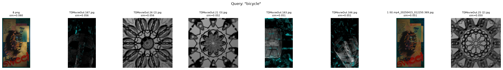
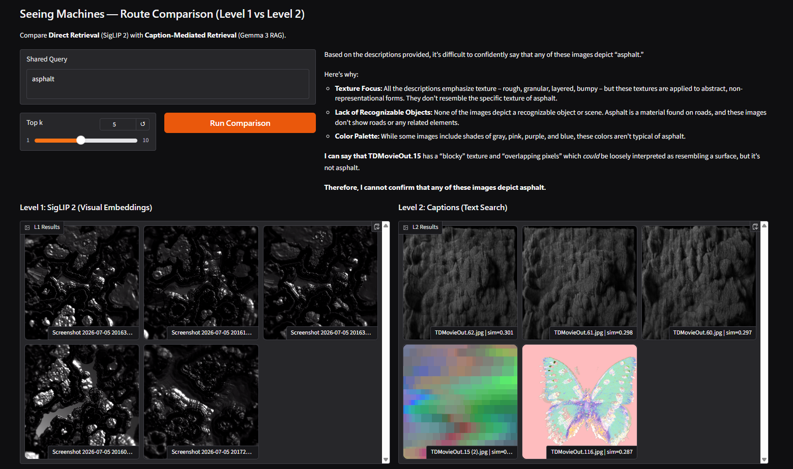
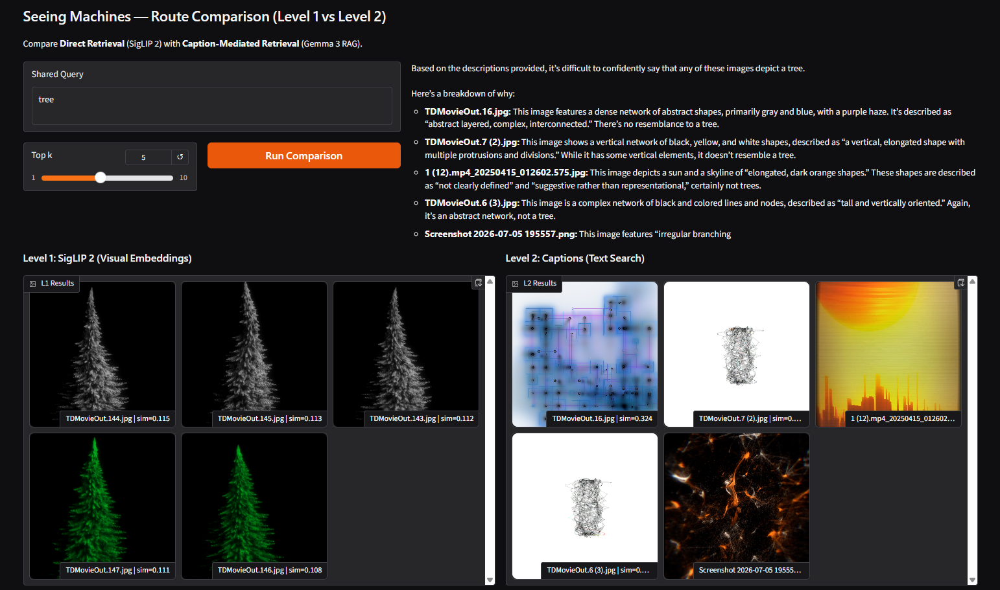
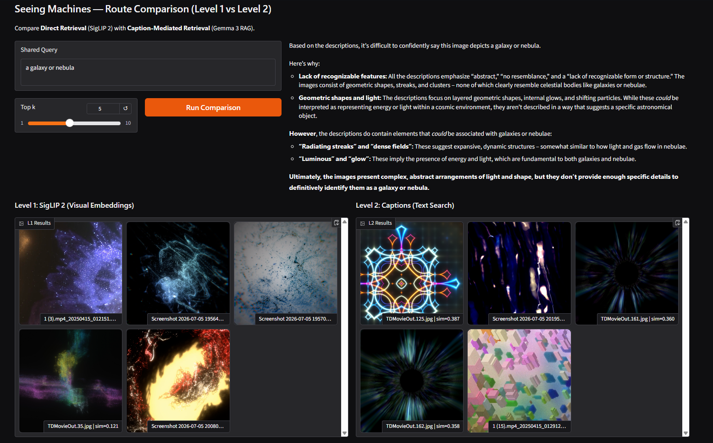
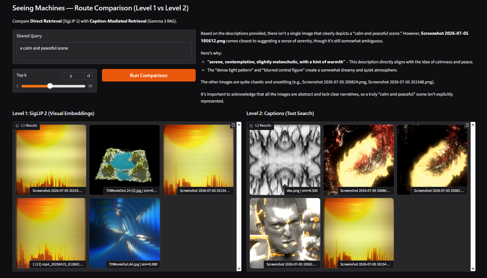
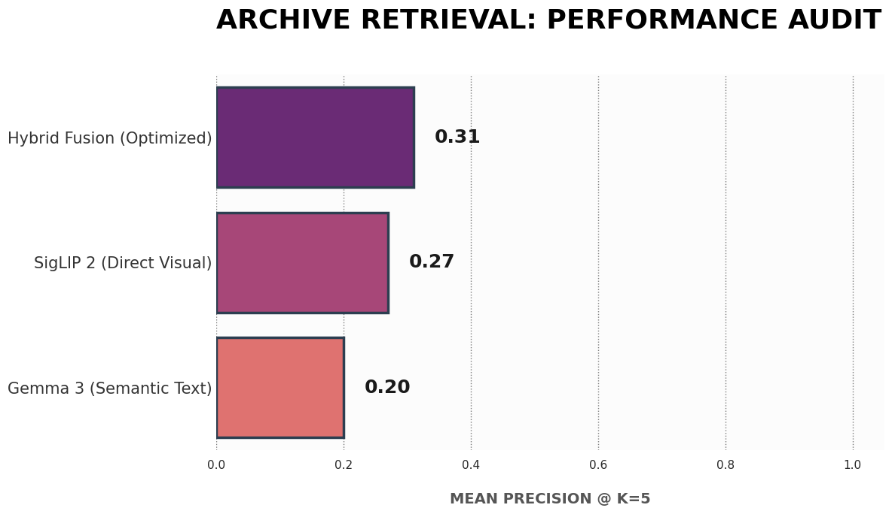

Abstract
Seeing Machines is a retrieval-augmented system built over a personal archive of [346] generative visuals produced in TouchDesigner, particle simulations, 2D fluid solvers, procedural noise fields, generative geometry, etc. The project asks a specific question: when a vision-language model describes a procedurally generated, non-representational image, does it stay honest about its uncertainty, or does it impose real-world objects and scenes that were never there? A joint text–image embedding model (SigLIP 2) provides direct semantic search over the corpus, while a vision-language model (Gemma 3 4B) generates structured descriptions that are embedded and retrieved separately, enabling grounded conversation with the archive. Both routes are compared directly, and every documented failure, hallucinated objects, skewed readings, and moments of genuine ambiguity are treated as a primary finding, not an error to hide.
Motivation & Corpus
Why this archive
I know these systems from the inside; I built each one and understand exactly what parameters, seeds, and solver states produced every frame. That gives me a ground truth a generic dataset never could: when the machine describes an image, I can check its reading against what is structurally, mechanically true about the image, not just against my own aesthetic impression of it.
What the collection is
[346] frames sampled across various distinct generative systems built in TouchDesigner: a particle simulation, a 2D physics/fluid solver, a solver-based system, and noise-driven / procedural shape generators. Frames span different camera angles, parameter states, and points in each system's timeline, rather than one still per project.
Why I chose it
My research interest is pareidolia in vision-language models, whether a model reads real-world meaning into visuals that are procedurally generated and carry no representational intent. Knowing each system's internal logic lets me tell the difference between a coincidental resemblance that is genuinely there in the image and one the model has invented.
How I curated it
Frames were exported across numerous projects, sampling multiple timeline states and camera positions per system to capture both within-system variation and between-system diversity, rather than hand-picking a single best frame per project.
.jpg) corpus sample 01
corpus sample 01
.jpg) corpus sample 02
corpus sample 02
.jpg) corpus sample 03
corpus sample 03
.png) corpus sample 04
corpus sample 04
.jpg) corpus sample 05
corpus sample 05
.jpg) corpus sample 06
corpus sample 06
Approach
Pipeline
Three levels, each reusing the previous level's retrieval as a component rather than replacing it.
Description schema & captioning prompt
Each image is captioned into a structured schema rather than a single free-text caption, splitting purely visual description from the model's interpretive reading:
literal_descriptionshapes, values, density, motion — no naming of real-world thingsperceived_subjectwhat the model thinks this resembles, if anythingresemblance_confidenceabstract / low / medium / highcompositionframing, layout, focal pointcolor_palette2–4 dominant tonestexturesurface qualitiesmoodatmospheric readnotable_elementsspecific indexable detailsambiguous_or_uncertainwhat the model itself flags as unsure
The split between literal_description and perceived_subject exists
because my research question is specifically about pareidolia: whether the model reads
real-world meaning into visuals with no representational intent. A single blended field would
hide that behavior; forcing the model to describe visually first, then separately commit to
(or decline) a real-world resemblance with a stated confidence, makes the phenomenon directly
measurable and sortable across the whole corpus.
SigLIP 2 vs. caption-mediated retrieval
SigLIP 2 retrieval and caption-mediated retrieval were run on the same [5+] queries side by side.
Results — Level 1
Retrieval Atlas
Documented queries against the SigLIP 2 embedding space — successes and failures, each explained in terms of what the embedding is actually keying on.
"fabric or woven texture"

Good one, the dark woven textures look like actual fabric weave and the smooth cream swirl ones look like folded cloth, solid match across the board.
"sunset over water"
.png)
First few results are a genuinely great match, warm gradient over water reflection look, but it falls apart toward the end with random blue grid and pixel mosaic stuff.
"a human face"
.png)
Actually kind of unsettling, almost every result resembles a human face but they are affected heavily with effects, of course.
"a galaxy or nebula"
.png)
Genuinely the best result set. The dark blue starfield one and the orange nebula-blob one look like space photos.
"fire and smoke"
.png)
The orange/black swirl and the marble sphere both have kind of the fire look, and the grainy dark one actually reads more like smoke than fire.
"cracked stone or ceramic"
.png)
Good matches, the dark cratered textures really do look like cracked surfaces.
"circuit board pattern"
.png)
By far the most consistent result set out of everything, same grid screenshots keep showing up here and honestly this is the strongest, most obvious match in the whole atlas.
"lightning"
.png)
Surprised me! The jagged blue streaks and the orange starburst both kind of read as electricity/sparks, this one just works.
"DNA or cellular structure"
.png)
First 3 results are basically the same faint grid image repeated which isn't DNA-like at all but I see the medical resemblance for all the returned images, but the colorful blob one after that genuinely does look cell-like.
"a spider web"
.png)
Actually pretty good, a bunch of the green branching ones genuinely look like web strands radiating out, didn't expect that to work this well.
"a swarm of insects"
.png)
The pale scattered dots one looks like an actual swarm, but a lot of the rest is just grainy stuff that got pulled in probably because they resemble swarms from far distance?!
"flowing hair"
.png)
The swirly ones (pink, teal, purple) genuinely have that flowing strand look, it is kind of right on the flow part but for the hair it is hard for it to come up with anything better.
"storm clouds"
.png)
The streaky gray ones are believable as heavy cloud texture but then colorful splashes show up which don't fit at all.
"dense forest canopy"
.png)
The green/purple ones from above kind of read as canopy seen from a drone, but half the results have similarities I couldn't connect before this, more color-matching than concept-matching I think.
"a school of fish"
.png)
The blue streaky line ones do look like fish swimming in formation which is cool, but then random unrelated pink and blue block stuff snuck in too.
"melting ice"
.png)
The grainy black and white textures kind of pass as ice/frost but that one colorful marble sphere at the end makes no sense here, feels like a color-based fluke.
"bicycle"
.png)
No real bicycle match obviously, but interesting that the circular mandala/kaleidoscope patterns showed up, guess the spoke-like radial lines got associated with wheels somehow.
"frog"
.png)
Kind of a joke query but wanted to see, none of these look like a frog. Closest is the bumpy grainy texture which could pass as frog skin if I squint but that's a stretch.
"ripples on water"
.png)
The yellow/black contour map (JFA) is a good match for ripples, rest are not good enough to pass I would say.
"sparse minimal composition"
.png)
Mostly pulled the same grid/graph-paper screenshots over and over, that's not sparse at all, it's dense and repetitive, feels like it just latched onto thin dark lines on light background.
Results — Level 2
Mis-Seeing Dossier
Cases where Gemma 3's captions diverged from what the image actually shows — hallucinated objects, skewed readings, or genuine ambiguity the model itself flagged.

"asphalt"
Chat answer: "I cannot confirm that any of these images depict asphalt"
A pastel-colored butterfly render, no textural or color relation to asphalt
Caption-mediated retrieval for 'asphalt' surfaced this butterfly render at rank 5, unrelated to any of the genuinely granular dark textures found elsewhere. Likely matched on incidental shared caption vocabulary rather than visual similarity, since nothing about a pastel butterfly resembles asphalt. Worth noting the chat model itself stayed honest and refused to confirm any image as asphalt when asked directly.

"tree"
Captioned as abstract, no clear resemblance noted; chat explicitly denied any tree resemblance
A clearly tree-shaped particle render, conical evergreen silhouette
SigLIP2 correctly retrieved this as a tree purely from visual silhouette (conical, tapering, evergreen-like branch structure). The caption route missed it entirely: the captioning model described it as abstract geometric/particle structure with no noted resemblance, so no caption text existed for the query 'tree' to match against. My schema deliberately discourages forcing resemblances to avoid false positives elsewhere, which cost recall here on an obvious real case.

"a galaxy or nebula"
"Radiating streaks and dense fields... somewhat similar to how light and gas flow in nebulae"
A symmetrical geometric kaleidoscope shader, not a cosmic or celestial form
For 'a galaxy or nebula,' caption-mediated retrieval surfaced this GLSL shader, and rather than rejecting the match the model stretched to justify it, citing 'radiating streaks,' 'luminous,' and 'glow' as vague evidence of a cosmic resemblance. These are words shared with genuine nebula-like renders in the corpus, but a symmetrical mandala bears no real visual resemblance to a galaxy. Different failure mode than the tree case: here the model overreaches instead of underclaiming.

"a calm and peaceful scene"
"Serene, contemplative, slightly melancholic, with a hint of warmth"
A stark, high-contrast symmetrical pattern with no calm but melancholic visual qualities
This high-contrast, aggressive pattern was captioned with the mood 'serene, contemplative' which doesn't match what's visually there. Caption-mediated retrieval trusted that mood label for the query 'a calm and peaceful scene' and ranked this image first, ahead of genuinely calmer sunset renders elsewhere in the corpus, and also surfaced two visually chaotic fire-toned images for the same reason. Shows the caption route inherits whatever mood-reading errors the VLM made at captioning time, with no way to correct for it at retrieval time.
Results — Level 3
Evaluation
Precision@5 measured across all three retrieval routes against a [20-30]-query gold-standard set with known-correct images.

| Route | Mean precision@5 |
|---|---|
| SigLIP 2 only | 0.27 |
| Caption only | 0.20 |
| Hybrid | <0.31/td> |
SigLIP2-only averaged precision@5 ≈ 0.27, caption-only ≈ 0.20, hybrid ≈ 0.31 across the 20-query gold set; hybrid wins overall, but not just because it splits the difference. SigLIP2 wins clearly on queries with a strong visual/textural signal but no obvious name, "cool blue tones" (0.6 vs. 0.0 for captions) is the sharpest example, since color temperature is something an embedding reads directly from pixels, but a caption only reports if the schema happened to log it explicitly. Captions win on queries with a real subject the schema is built to catch, like "a human figure" and "a grid or lattice structure" (0.4 vs. 0.0 for CLIP on both), where semantic labeling beats raw visual similarity. The routes diverge most sharply exactly where hybrid gets interesting: On "dark and shadowy composition," "scattered random noise," and "thin wispy strands," hybrid scored higher than either individual route, not an average, an improvement over both, because SigLIP2 and captions each caught a different correct image, and fusing let both surface in the merged top-5. But fusion isn't free. On "cool blue tones," where SigLIP2 alone was strongly right, blending in the caption route's wrong answer pulled the hybrid score down from CLIP's 0.6 to 0.2. That's the real finding on fusion weighting: a fixed alpha=0.5 is a compromise that wins on average across a mixed query set, but it helps most when the two routes are complementary and actively hurts when one route is confidently right, and the other is confidently wrong. A per-query or adaptive alpha, leaning toward SigLIP2 for texture/color queries and toward captions for named-subject queries, would likely outperform any single fixed weighting, and is the most concrete next step this evaluation points to.
Reflection
What I'd build next
The most surprising result was the "tree" query — SigLIP 2 found four unmistakably tree-shaped particle renders purely from silhouette, while the caption route missed all four completely. I went in assuming the caption route would be the more capable one, since it has language to work with. It turned out my own schema was the bottleneck: I designed `resemblance_confidence` to be conservative on purpose, to stop the model from forcing resemblances that weren't there, and it worked almost too well, making the model too cautious to name a resemblance that was genuinely obvious. Caution and recall turned out to be a direct trade-off, not two things I could have for free. My assumption that "obviously abstract" images would behave predictably also broke down in both directions, not just one. The mandala pattern retrieved for "a galaxy or nebula" showed the model overreaching, stretching vague words like "luminous" and "radiating" into a resemblance that wasn't visually there. The high-contrast zigzag pattern captioned as "serene, contemplative" for the "calm and peaceful" query showed something else again: not a hallucinated object, but a wrong emotional read that then propagated downstream into retrieval, since the caption route trusted its own earlier mood label without any way to double-check it. So three different queries produced three different mechanisms of failure, underclaiming, over- claiming, and mood misjudgment, not one repeatable "the model hallucinates" story. The hybrid retrieval numbers added a fourth layer: fusing the two routes isn't uniformly good. On several queries it beat both individual routes by catching different correct images from each; on "cool blue tones," where SigLip2 alone was strongly right (0.6) and captions were wrong (0.0), fusing actively pulled the score down. A fixed alpha=0.5 is a compromise across a mixed query set, not a universal improvement. What the next version needs, to catch its own mis-seeing without me eyeballing every result: a way to flag disagreement automatically rather than requiring a human to compare grids by hand. Concretely, that could mean cross-checking a caption's `perceived_subject` against SigLIP 2's own zero-shot classification confidence for that same label, and surfacing anything where the two disagree strongly as a review candidate, a lightweight, built-in mis-seeing detector rather than the manual dossier process I ran here. I'd also want per-query alpha instead of a fixed global one, since the evaluation data suggests different query types (texture/color vs. named-subject) genuinely favor different routes.
Limitations
What this system can't do
- The caption schema's conservative `resemblance_confidence` field, while designed to prevent false positives, measurably reduced recall on genuine resemblances (see the "tree" case) — precision and recall were not both maximized by the same design choice.
- Gemma 3 4B is a small VLM; caption quality and multimodal reasoning degrade with more than 3-4 images in context.
- The gold-standard evaluation set (20 queries) is hand-labeled by me from a single pass through the corpus — it reflects my own judgment of "correct," not an independent or blinded annotation, so precision@k numbers should be read as indicative rather than authoritative.
- Retrieval is zero-shot throughout; no fine-tuning was performed on this corpus for either the embedding model or the caption/generation model.
- Hybrid fusion uses a single fixed alpha across all queries; the evaluation results suggest the optimal weighting is query-dependent, which a static alpha cannot capture.
Sources & References
- * Zhai et al., "Sigmoid Loss for Language Image Pre-Training" (SigLIP), 2023.
- Tschannen et al., "SigLIP 2: Multilingual Vision-Language Encoders with Improved Semantic Understanding, Localization, and Dense Features," 2025.
- Tschannen et al., "SigLIP 2: Multilingual Vision-Language Encoders with Improved Semantic Understanding, Localization, and Dense Features," 2025.
- Google, Gemma 3 model card / technical report, 2025.
- Reimers & Gurevych, "Sentence-BERT," 2019 (sentence-transformers / all-MiniLM-L6-v2).
- Rohrbach et al., "Object Hallucination in Image Captioning," EMNLP 2018 — background on the general phenomenon this project's mis-seeing dossier documents empirically.
- TouchDesigner (Derivative) — used to generate the full source corpus (particle systems, 2D fluid/physics solvers, procedural noise and geometry).